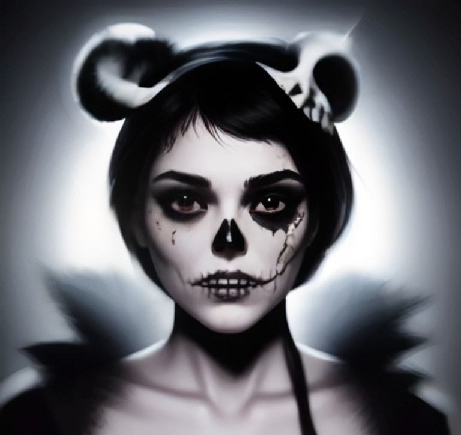
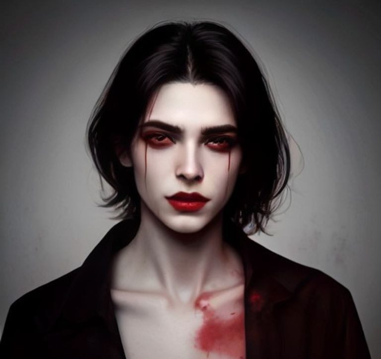
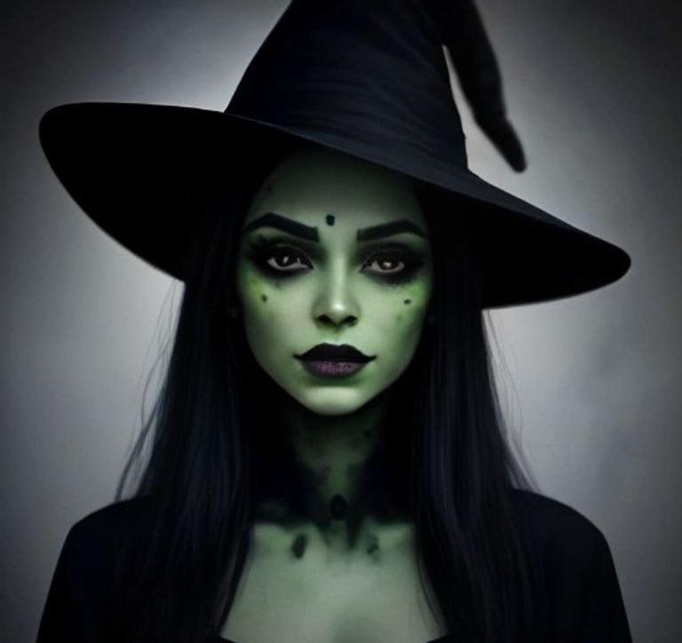
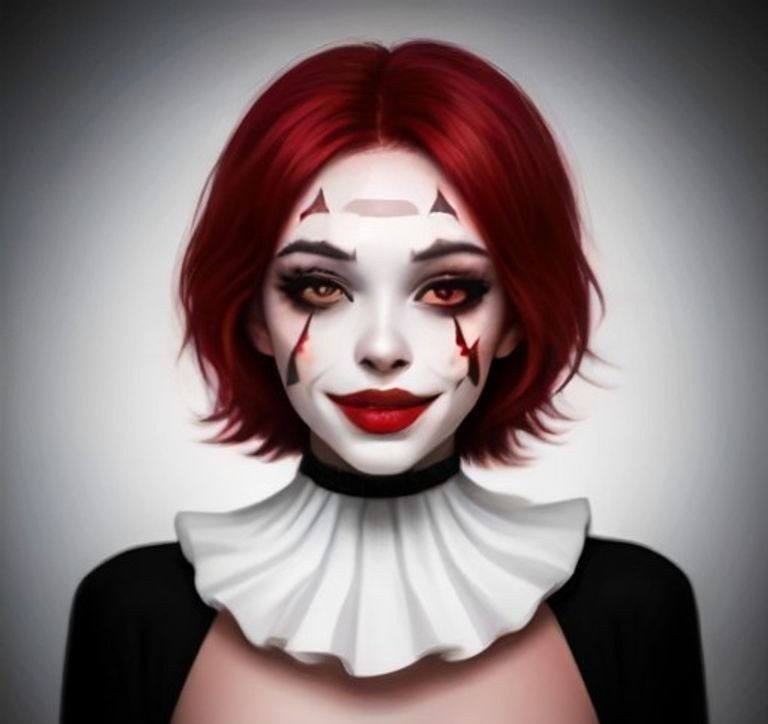

Los 6 maquillajes de Halloween más típicos y cómo hacerlos en 15 minutos

El maquillaje de Halloween tiene una regla: lo que se ve bien en el baño con luz blanca, de noche en una fiesta desaparece. Hay que exagerar. Aquí van los seis que más se repiten cada año, cada uno con una imagen de cómo queda, un vídeo paso a paso en castellano y lo mínimo que hace falta.
Lo que necesitas para todos
- Base blanca o muy clara en barra (la de disfraz, no la de maquillaje normal).
- Un lápiz negro blando y una sombra negra.
- Pintalabios rojo oscuro.
- Polvos translúcidos para fijar. Sin ellos, a la segunda copa el maquillaje está en el vaso.
1. Calavera (15 minutos)

Base blanca en toda la cara. Con la sombra negra, cuencas de los ojos enteras, la punta de la nariz en forma de corazón invertido y dientes dibujados sobre los labios con el lápiz. Truco: sombrea las sienes y bajo los pómulos con negro difuminado; de lejos es lo que lo hace parecer un cráneo.
2. Vampiro (10 minutos)

Base clara, ojeras marcadas con sombra morada o gris, labios rojo oscuro y dos gotas de "sangre" (pintalabios) desde la comisura. Los colmillos de plástico se compran en cualquier bazar; los buenos se pegan con un poco de adhesivo dental.
3. Zombi (20 minutos)
Base grisácea (blanca mezclada con un poco de sombra negra), ojeras profundas, labios sin color. Las "heridas" se hacen con pegamento de látex y papel de seda arrugado, pintadas con rojo oscuro. Si no tienes látex, una tirita pintada de rojo y despegada por un lado da el pego.
4. Bruja (10 minutos)

Aquí manda el verde: base verde (o blanca con sombra verde encima), cejas muy marcadas, labios negros y una verruga pintada con el lápiz. El sombrero hace la mitad del trabajo.
5. Gato (5 minutos)
El más rápido. Nariz negra, tres bigotes a cada lado con el lápiz, ojos alargados con el eyeliner hacia arriba. Diadema con orejas y listo. Es el disfraz de quien decide a las ocho que sí va a la fiesta.
6. Payaso (15 minutos)

Base blanca, sonrisa gigante pintada en rojo que sale de los labios, ojos con triángulos negros arriba y abajo. Sirve para versión simpática y para versión terrorífica; la diferencia es solo la forma de la sonrisa.
Si no quieres maquillarte
Hay dos disfraces que no llevan ni un minuto de maquillaje y son de los que más impresionan de noche:
- Médico de la peste: máscara con pico y capa con capucha. Talla única, se pone en un minuto y nadie sabe quién va debajo. Es el que más fotos consigue en una fiesta.
- Alas de ángel con aureola: sobre ropa blanca o negra, con un poco de brillo en los pómulos, es un disfraz completo. Sirve también para carnaval y Navidad.
Para que dure toda la noche
Polvos de fijación al terminar, y un espray fijador si lo tienes. Y lleva en el bolsillo el lápiz negro: es lo único que vas a tener que retocar.
Las imágenes de ejemplo están generadas con inteligencia artificial; los vídeos son tutoriales públicos de YouTube de sus autores.